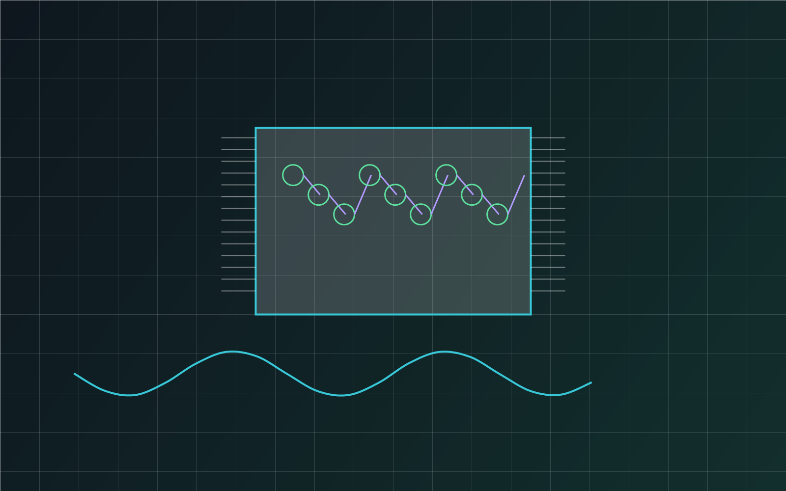

Research Foundation
Research depth that supports practical AI/ML work.
This page gives context for the portfolio: trustworthy AI, security ML, LLM-assisted systems, HDC anomaly detection, scientific ML, and the evaluation habits that connect research ideas to implementation.
Research Statement
Trustworthy machine learning for physical systems, security, and high-stakes decisions.
My research asks a practical question: when machine learning is placed inside a real system, does it still behave reliably when the data are noisy, incomplete, adversarial, or physically constrained? I study this question primarily through hardware security, where ML models must reason over side-channel measurements, process variation, limited labels, and attackers who may deliberately adapt to the detector.
A major part of my work focuses on ML-assisted hardware Trojan detection and localization. Semiconductor systems are increasingly exposed to untrusted design, fabrication, testing, and integration environments, so detection methods cannot depend only on clean benchmark accuracy or ideal golden references. I build and evaluate pipelines that use side-channel evidence such as Ring Oscillator Network, power, frequency, and electromagnetic behavior to identify malicious or anomalous circuit behavior.
My recent work pushes this direction toward adversarial robustness. In the NSF REU project I mentored and helped develop, we showed that a detector with strong nominal performance can fail under gradient-based adversarial perturbations. We then studied synthetic data augmentation strategies, including SMOTE, CTGAN, and TVAE, to make hardware Trojan detection models more resilient. This line of work reflects the larger principle behind my research: secure AI systems need evaluation under stress, not only evaluation under friendly conditions.
Beyond hardware security, I apply the same research lens to LLM-assisted explainability, rubric-aware assessment, hyperdimensional computing for IoT anomaly detection, and scientific ML for drug-target affinity prediction. The domains differ, but the core goal remains consistent: build AI/ML systems that are reproducible, interpretable enough for human use, efficient enough for deployment, and robust enough to be trusted when the environment changes.
Themes
Research areas behind the project work.

Trustworthy AI and Adversarial ML
Evaluating and improving ML behavior under attack, uncertainty, noisy measurements, and distribution shift.
Adversarial MLRobustnessExplainabilitySecurity

AI for Hardware Security
Building ML pipelines on side-channel measurements for golden-reference-free hardware Trojan detection and localization.
Hardware TrojanSide-ChannelFPGAUnsupervised ML

LLM-Assisted Explainable Systems
Combining numerical models with LLM-based explanation layers for cybersecurity and human-centered assessment workflows.
LLMsXAIClinical AIIoT Security

Hyperdimensional Computing
Testing brain-inspired high-dimensional representations for efficient anomaly detection in IoT, edge AI, and data streams.
HDCAnomaly DetectionIoTEdge AI
AI for Drug Discovery
Using deep learning and attention mechanisms to model drug-target interactions and support scientific ML workflows.
Drug DiscoverySelf-AttentionCNNBioinformatics
Why these themes
Trustworthiness as the through-line.
The unifying thread across my work is whether ML systems behave well outside the conditions they were trained for — under adversarial perturbation, on out-of-distribution measurements, with limited labels, in adversarial supply chains, or where humans need to understand why a model said what it said.
That question shows up differently in hardware security (can detection survive process noise and adaptive attacks?), in clinical AI (can rubric-aware scoring be defended?), in drug discovery (can sequence models generalize beyond the training distribution?), and in IoT (can edge-friendly representations like HDC catch novel attacks?). The methods change; the question doesn't.
For implementation details and concrete results, see the projects page or the publication list.